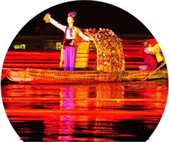
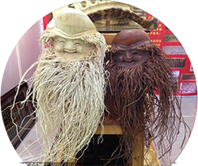
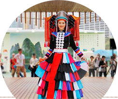
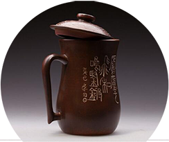
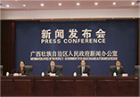
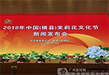
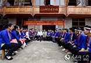
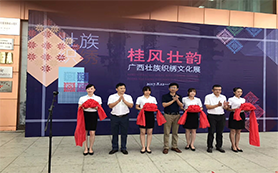
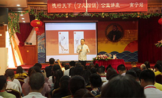
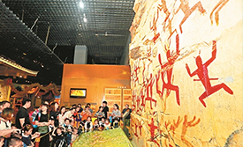

-

The culture of liu sanjie is the symbolic composition of the "zhuang nationality".Liu sanjie is "the daughter of song wei"
-

The traditional bamboo weaving process is rich in the crystallization of the hard work of the laboring people
-

Zhuang brocade, one of China's four famous brocade, originated in the han dynasty, is a cultural treasure of guangxi.
-

Nixing pottery has a long history of pottery making in qinzhou, and its pottery making art is an integral whole with obvious
-

It is one of the important activities for the 60th anniversary of the founding of xiying autonomous region, aiming to fully display the practical achievements of xi jinping thought on socialism with Chinese
The press conference of "zhuang nationality March 3 · bayi carnival" was heldIt shows the colorful
-

The festival highlights the characteristics of mass participation and cultural benefits to the people, and adheres to the principle of "taking the people as the center" to strengthen the people's dominant position.It shows the colorful ethnic traditional
The 2018 China (hengxian) jasmine flower cultural festival will open on aug 31It
-

In accordance with local conditions and policies adopted by different people, guangxi, in combination with its ethnic and cultural characteristics, guides all regions in the region to explore and practice the cultural poverty alleviation road
"Intangible cultural heritage + poverty alleviation" takes on a new look
Guangxi zhuang embroidery culture exhibition
This exhibition contains four units of zhuang clothing, tie-dye, zhuang brocade and embroidery, and highlights the unique cultural
Public lecture on traditional culture
The activity invites teachers to explain the "four disciplines of fan" in an easy way, aiming at spreading and inheriting excellent Chinese traditional culture
"Colorful baygui" special exhibition
The "colorful bayi" special exhibition area of guangxi national museum. During the summer vacation, various public welfare venues in nanning city have held a series of theme activities